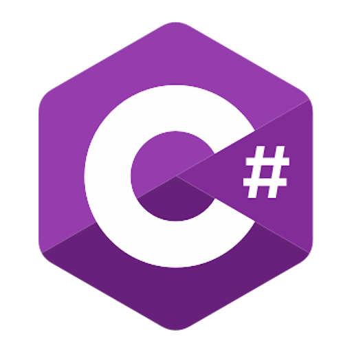

My Job
At Camis, I was placed on the Sale Squad. Our team was responsible for the sales-
related functionality of both the desktop and web solutions at Camis. Their desktop
solution was a Microsoft .NET application using the WPF framework, and their
web solution was an Angular web application.
The sales functionality for their desktop solution included the features that allowed
users to configure various products, services, fees, etc, as well as the
software to be used at point-of-sale terminals at park locations.
The sales functionality for their web solution was the web store and checkout
portion of it. Users could add items to their cart or create reservations, and
then be taken through a checkout workflow that would allow them to enter
all of the necessary information including payment info, addresses, etc. to purchase
items and services.
Initially, the team consisted of four developers including myself, a QA,
and a UX designer who had stepped in as the product manager while the
official product manager was on parental leave.

https://cdn4.iconfinder.com/data/icons/logos-and-brands/512/21_Angular_logo_logos-512.png

https://upload.wikimedia.org/wikipedia/commons/4/4f/Csharp_Logo.png